Order of the Gauntlet
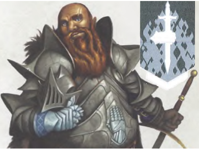
- Tropa terrestre com guerreiros fortes e com bastante armadura.
- Não recebem nem dão bônus ao lutar com outros guerreiros (se acham superiores e lutam sozinhos)
- Porém não vão gerar desvantagem ou antagonizar outros grupos (não odeiam os outros grupos e acham eles corajosos e valorosos apesar de mais fracos)
Emerald Enclave (1)
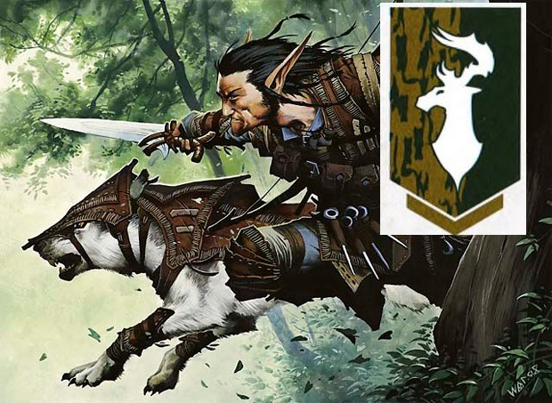
- Tropa variada contendo druidas, rangers, treants e grifos.
- Funciona muito bem em áreas de floresta pelos seus conhecimentos e tropas.
- Também funciona bem pra passar despercebidos/stealth ou em alta velocidade.
Emerald Enclave (2)
- Tropa variada contendo druidas, rangers, treants e grifos.
- Funciona muito bem em áreas de floresta pelos seus conhecimentos e tropas.
- Também funciona bem pra passar despercebidos/stealth ou em alta velocidade.
Zhentarim assassins
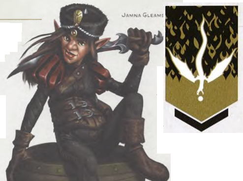
- Assassinos profissionais porém em pequeno número.
- Funcionam bem pra causar muito dano (ou até matar) uma única criatura/pessoa.
- Não são bons pra combater tropas de grande número ou com alta armadura.
Harper agents
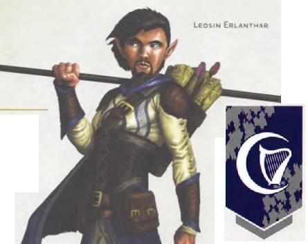
- Espiões muito bons pra recolher informações e escapar vivos com elas.
- São bons de stealth e entrar em locais despercebidos
- São fracos em combate
- Suas informações podem dar bonus pra uma outra tropa.
Metallic dragons

- Dragões bondosos seguidores de Bahamut, com poderes e habilidades levemente semelhantes aos dragões cromáticos de Tiamat.
- São bons de evasão.
- São muito grandes, portanto não são bons de stealth.
- Conseguem enfrentar grandes tropas com certa faclidade.
- Podem se unir com outra tropa pra gerar um grupo forte ou lutar sozinhos.
- Não se dão bem com os gigantes e se der azar podem até se enfrentar.
Devils
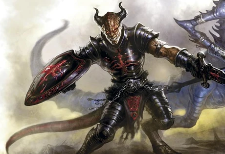
- Demônios com poderes variados.
- Tropa que é boa de evasão e (em certo aspecto) de stealth pois podem aparecer em portais em um lugar específico.
- Nenhuma das outras tropas se dá bem com eles pela sua aparência e poderes demoníacos. Na melhor hipótese diminuem a força da outra tropa q vai ter medo deles e na pior hipótese a outra tropa ataca os demônios.
Giants with Skyreach Castle
- Gigantes aliados que usam seu castelo voador para entrar em combate.
- Não são bons de evasão nem de stealth pois estão num enorme castelo voador.
- Podem dar ótimos bonus pra outras tropas que podem entrar no combate usando o castelo de transporte e defesa.
- Esse bônus não funciona com os dragões metálicos, que podem até brigar com os gigantes.
Lords' Alliance army (1)
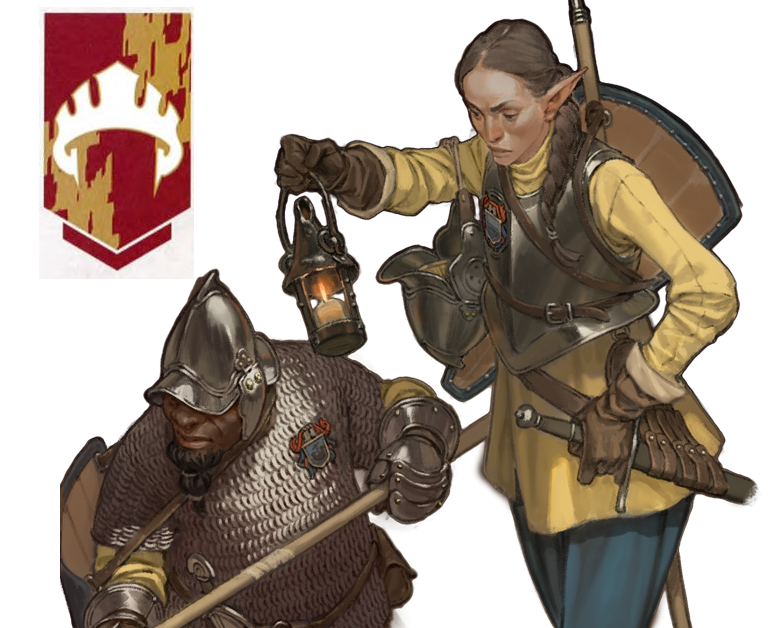
- Tropa mais básica possível, com soldados terrestres com equipamento padrão mediano de um guarda comum.
- Apesar de básica, essa tropa vem em números bem grandes, o que torna ela forte também.
Lords' Alliance army (2)
- Tropa mais básica possível, com soldados terrestres com equipamento padrão mediano de um guarda comum.
- Apesar de básica, essa tropa vem em números bem grandes, o que torna ela forte também.
Lords' Alliance army (3)
- Tropa mais básica possível, com soldados terrestres com equipamento padrão mediano de um guarda comum.
- Apesar de básica, essa tropa vem em números bem grandes, o que torna ela forte também.
Arcane Brotherhood
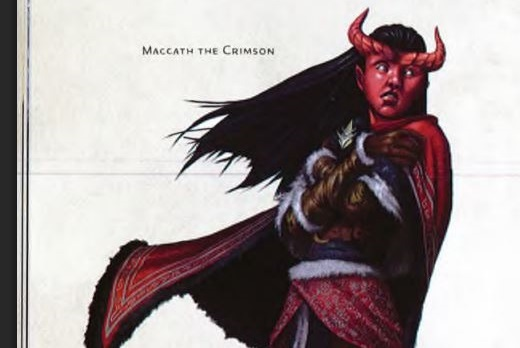
- Magos que não vão seguir ordens facilmente, porém vão ajudar (da maneira que acharem melhor).
- Eles ignoram todas as desvantagens que envolvam entrar em combate entre tropas aliadas e não vão entrar em conflito com ninguém,
- Um dos players faz um teste de CHARISMA DC20 pra ver se pode escolher quem eles vão ajudar. Se passar escolhe qual tropa vai ajudar, se falhar é aleatório.
Severin
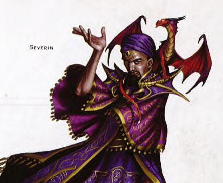
- players mission: destruir os lideres e parar o ritual
Rath Modar
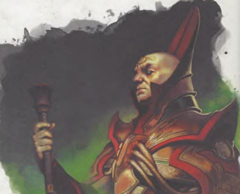
- players mission: destruir os lideres e parar o ritual
Cult leaders (1)
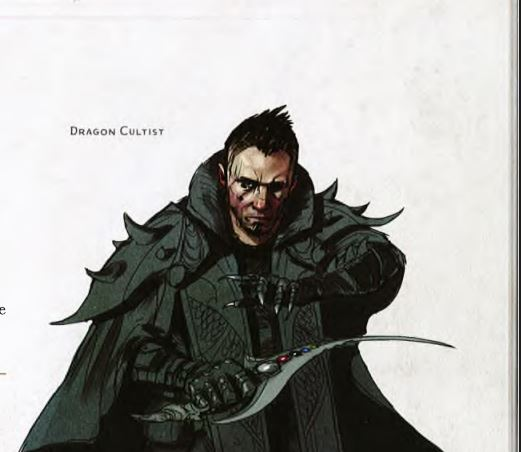
- players mission: destruir os lideres e parar o ritual
Cult leaders (2)
- players mission: destruir os lideres e parar o ritual
Cult leaders (3)
- players mission: destruir os lideres e parar o ritual
Temple of Tiamat
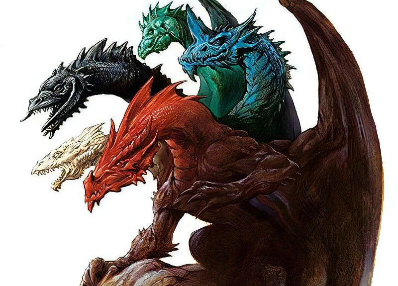
- players mission: chegar no templo e parar o ritual
Chromatic dragons (1)
- players mission: destruir os dragões ou passar os players por eles até o templo
Chromatic dragons (2)
- players mission: destruir os dragões ou passar os players por eles até o templo
mercenaries (1)
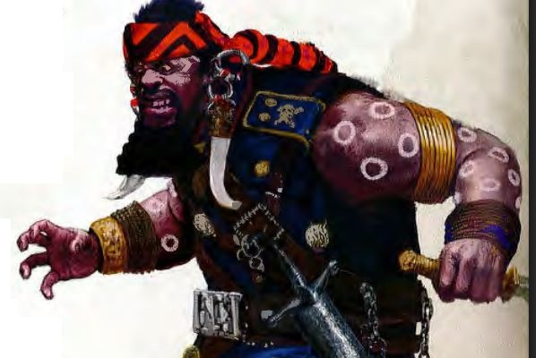
- players mission: destruir os dragões ou passar os players por eles até o templo
mercenaries (2)
- players mission: destruir os dragões ou passar os players por eles até o templo
mercenaries (3)
- players mission: destruir os dragões ou passar os players por eles até o templo
mercenaries (4)
- players mission: destruir os dragões ou passar os players por eles até o templo
Cultist troops (1)
- players mission: destruir as tropas ou enviar os players até o templo
Cultist troops (2)
- players mission: destruir as tropas ou enviar os players até o templo
Cultist troops (3)
- players mission: destruir as tropas ou enviar os players até o templo